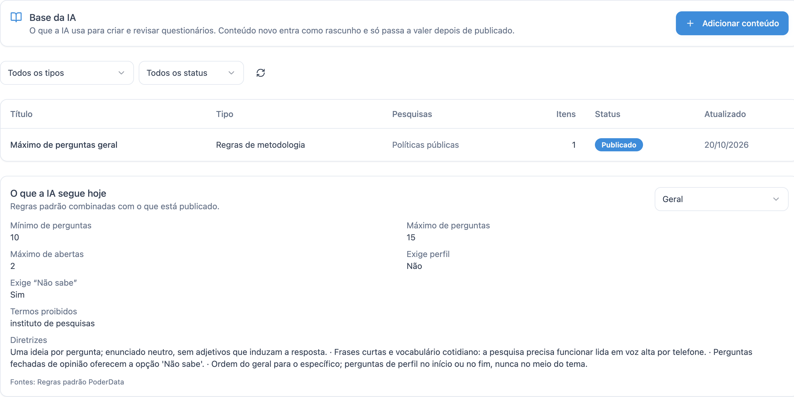
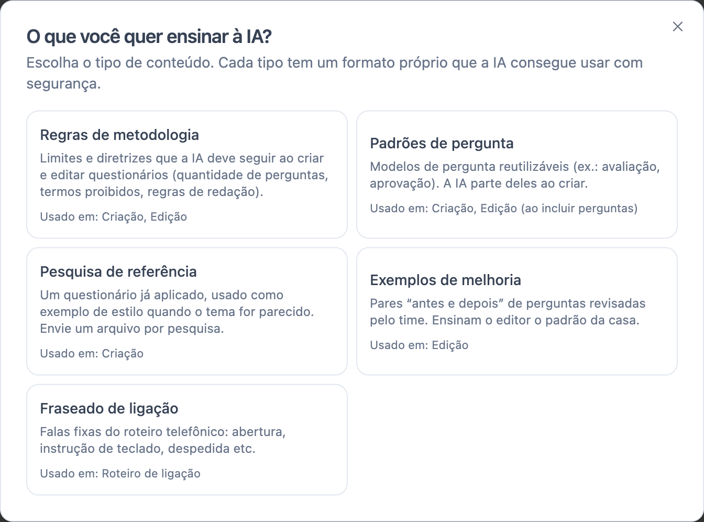
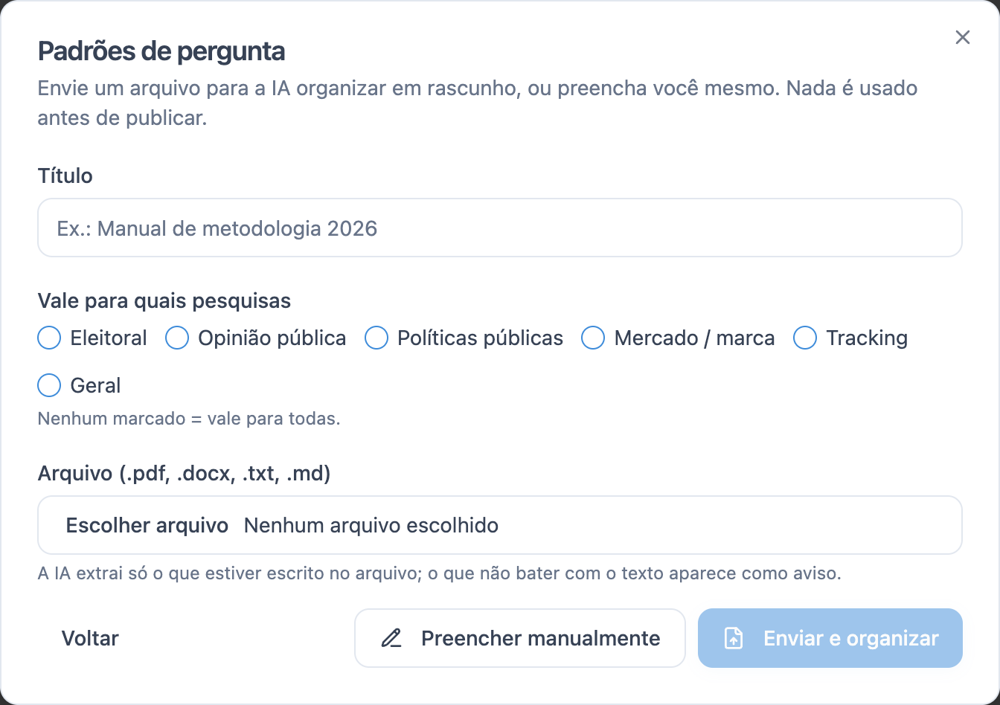
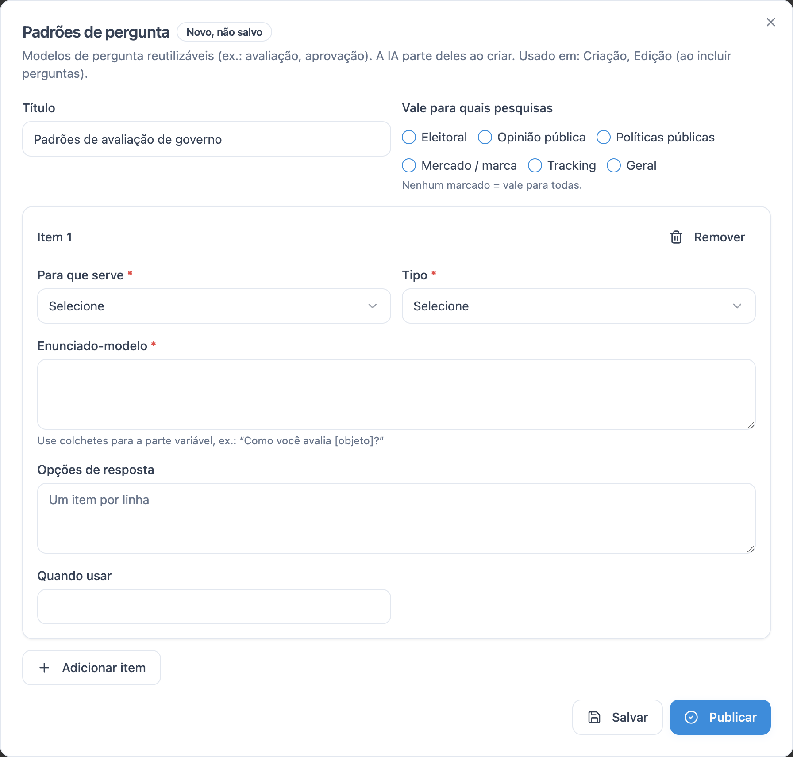

Escopo PoderData RR
Plano de release, deadline 1.dez.2026
- A plataforma é a casca; os RAGs são o cérebro
- 10 a 15 perguntas na v1, teto de 20
- "empresa de pesquisas", nunca "instituto"
- IA nunca calcula no tracking
Base de conhecimento, os três RAGs, o roteiro telefônico, guardrails e cinco perguntas que eu preciso que você me ajude a responder.
O que li nos documentos, como organizei a Base da IA, os fluxos dos RAGs e do roteiro, busca e ingestão.
o maior bloco 2A IA deve lembrar dos projetos anteriores da conta ou só da conversa atual?
3O que já protege a IA hoje e o que pode estar faltando.
4Tipos de pesquisa fixos ou dinâmicos, e quem pode mexer em quê.
5Entender como você imaginou o analista de trackings e onde entra o Perplexity.
Li o escopo principal e os três documentos de RAG citados nele. Passe o mouse para ver o que cada um define.
Plano de release, deadline 1.dez.2026
Tema ou rascunho vira a v1 do questionário
Chat que lapida o questionário com estado
Brief diário sobre séries numéricas
O cliente cria com o RAG 1, lapida com o RAG 2, o roteiro vira ligação, o campo gera dados e o RAG 3 analisa. A Base da IA alimenta os três primeiros.
Gera a v1 a partir do tema
→ RAG 2Ajusta por chat, com versões
→ RoteiroVersão final vira fala
→Fora da IA
Brief do tracking
Princípio que vale para tudo: modelo forte só onde se escreve. Classificar, buscar e validar é código ou modelo pequeno. Fica mais barato, mais rápido e dá para testar.
O superadmin não "joga documentos para a IA ler". Ele ensina conteúdos de 5 tipos, cada um com formato próprio, revisado e publicado. Passe o mouse para ver um exemplo de cada.
Vocabulário fechado de propósito: a IA escolhe entre opções conhecidas, e quem consulta a base é o código. Isso evita que o modelo "invente" uma categoria.
Telas reais do painel admin (ambiente local). Clique para ampliar.




Nada entra direto. Todo conteúdo vira rascunho, passa por revisão e só vale depois de publicado. Clique em Simular ou em qualquer etapa.
Hoje a busca é por palavras, depois de filtrar por tipo de conteúdo e tipo de pesquisa. Teste abaixo com uma base de exemplo.
Recebe um tema ou rascunho e devolve a v1 com até 3 sugestões de temas correlatos. Clique em Simular e escolha o cenário.
O modelo não reescreve o documento: ele devolve operações (alterar, incluir, remover, mover). Quem aplica é o código, respeitando travas e o escopo do pedido.
Por quê: removi a pergunta dupla e o termo "laboral".
Versão atual: v5 · 13 perguntas
Cada edição aceita vira uma nova versão. Guardamos as 10 últimas.
Cada conversa é isolada pelo seu identificador: o editor nunca vê outra conversa, nem do mesmo cliente.
Módulo separado, chamado só com a versão final. As falas fixas vêm da Base; o modelo só adapta cada pergunta para ser ouvida.
Hoje a IA usa duas camadas de contexto. A terceira, a da conta, é uma decisão de produto.
Igual para todos os clientes. Metodologia, padrões, exemplos e falas da casa.
Versões, travas e turnos da conversa atual. Isolada por conversa.
Projetos anteriores da mesma empresa, público habitual, termos preferidos.
Simples, sem risco de vazar dado entre clientes
Cada pesquisa nova começa do zero
A v1 já sai no estilo e no público do cliente
Precisa de isolamento forte por conta e cuidado com NDA
O cliente ou a equipe define preferências explícitas
Mais uma tela para manter; pode ficar desatualizado
A regra geral: o que dá para checar com código, é código. Passe o mouse para ver os detalhes. Os marcados com ajustável mudam pela Base da IA.
O classificador escolhe um deles, e cada conteúdo da Base diz para quais tipos vale.
Estável, testável, sem surpresa
Nova categoria exige deploy
Ex.: separar "saúde" ou "consumo"
Continua exigindo deploy
Flexível para novos mercados
Precisa de dono, senão vira bagunça
Uma ou poucas pessoas que dominam metodologia
Equipe que atende os clientes
Gestor do lado do cliente
Atenção ao nome: no sistema já existe "Admin da conta", que é do lado do cliente. Se criarmos o admin da equipe PoderData, convém outro nome (ex.: "Analista PoderData") para não confundir.
O documento é detalhado na redação do brief, mas várias peças de dados ainda não existem. Antes de construir, quero entender como você imaginou.
Hoje o grafo recebe um payload estatístico pronto e redige com verificação de números. Quem calcula esse payload (o motor estatístico) ainda não existe, e o Perplexity está previsto mas não ligado.
Tudo o que foi anotado nos cartões aparece aqui. As anotações ficam salvas neste navegador.